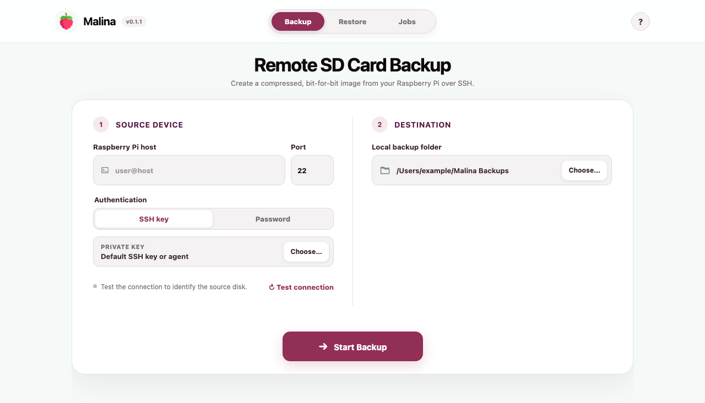
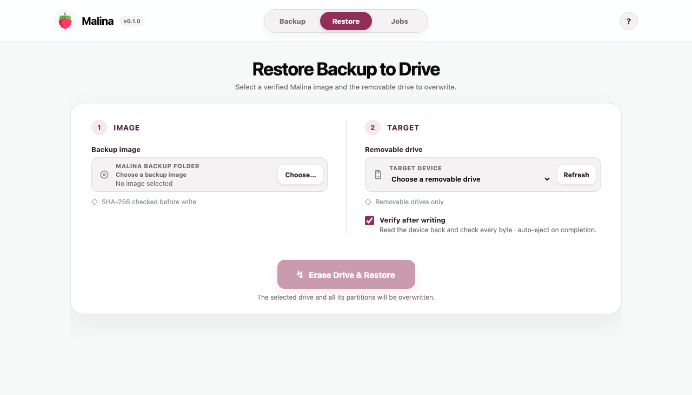
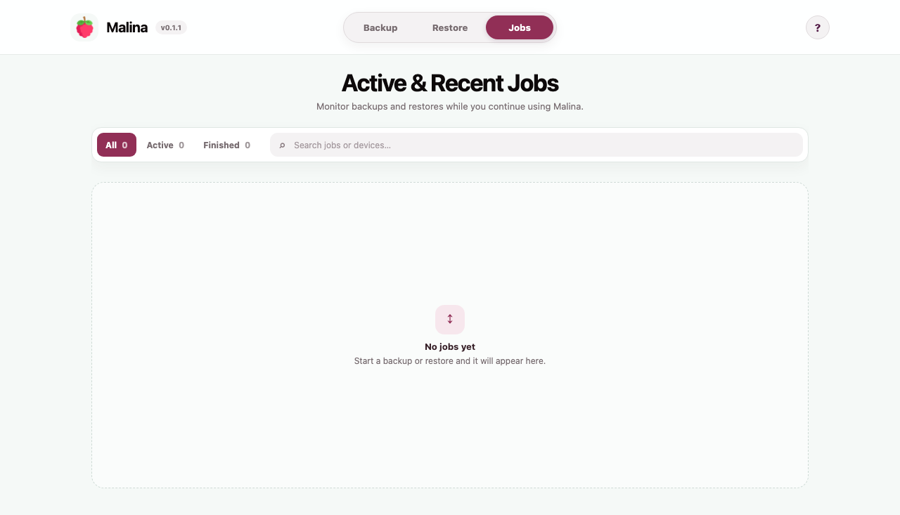

Agentless remote capture
Authenticate with an SSH key, agent or password. Malina discovers the boot and root device, runs sync, and streams the physical disk with dd.
Stream the Pi's physical disk to a gzip-compressed raw image on your computer. The partition table, boot sectors, operating system and data are captured and verified with SHA-256.

The result is a portable raw image plus a manifest containing source metadata, sizes and SHA-256 checksums for both compressed and uncompressed data.
Authenticate with an SSH key, agent or password. Malina discovers the boot and root device, runs sync, and streams the physical disk with dd.
Malina validates the manifest and image checksum before it opens a restore destination.
Track backup and restore progress in one queue, with pause, resume and cancellation controls.
Both interfaces use the same Go backup, verification and restore engine. The CLI emits structured JSON for inspection and scripting.
$ malina backup \
--host pi@home \
--identity ~/.ssh/id_ed25519 \
--output ~/Backups
$ malina verify ~/Backups/pi-…sync first, but this is not an atomic filesystem snapshot; files can change during capture. EEPROM bootloader configuration and multi-device boot layouts are not included.The desktop app exposes the same connection, backup, verification and restore operations as the CLI.


Backup: inspect the Pi's disk layout over SSH, select a local output directory, and stream the source device without staging data remotely.
Restore: select a Malina backup and one of the removable devices discovered by the operating system.
Jobs: inspect, search and filter active or completed backups and restores.
Restore targets are restricted to discovered removable media and revalidated immediately before writing.
Read the safety boundariesInternal and fixed disks are not offered as restore destinations.
The selected device identifier must be supplied again before erasure.
Full-device verification after restore is enabled by default.
A backup directory is published only after capture and verification complete.
macOS is available through Homebrew. Linux and Windows releases are portable archives for x86-64 systems.
macOS 12+ · Apple Silicon and Intel
brew install --cask meltingcore/tap/malinaInstalls Malina.app and links the CLI as malina.
amd64 · GTK 4 + WebKitGTK 6.0
tar -xzf malina-*-linux-amd64.tar.gz
cd malina-*-linux-amd64
./malinaRun the CLI as ./malina-cli, or install it with sudo install -m 0755 malina-cli /usr/local/bin/malina.
Windows 10/11 · x64
Expand-Archive .\malina-*-windows-amd64.zip
cd .\malina-*-windows-amd64
.\malina.exeRun CLI commands with .\malina-cli.exe. The release does not modify PATH.
Signing status: macOS builds are ad-hoc signed and Windows builds are unsigned, so the operating system may require manual confirmation. Published releases include a SHA256SUMS file.